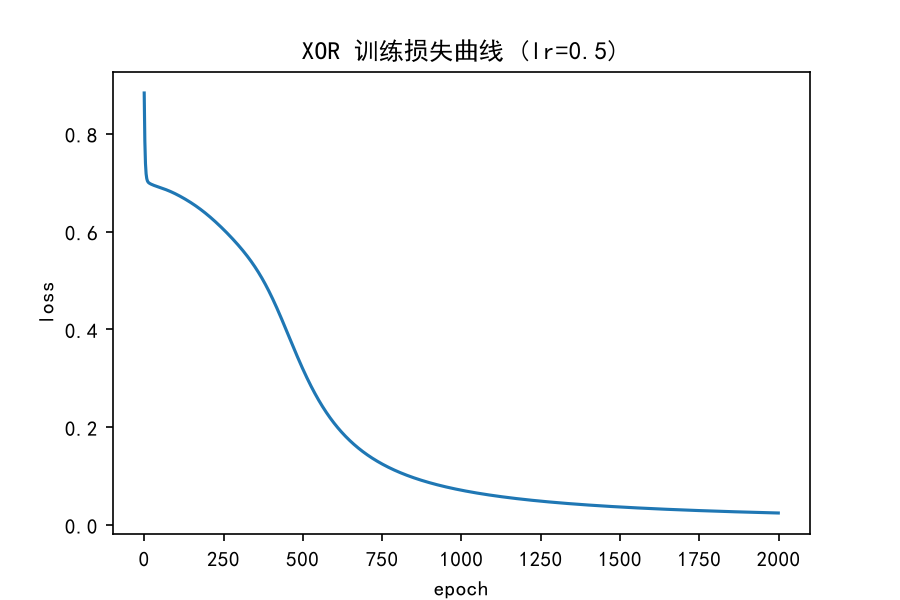
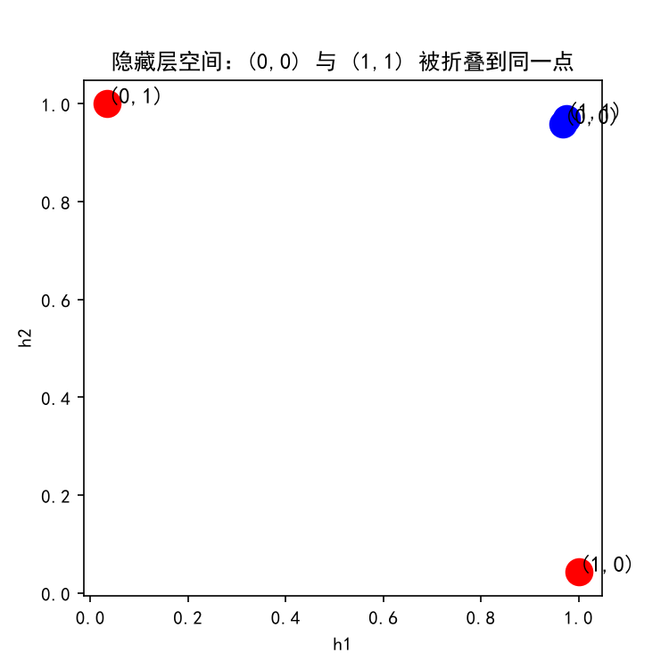
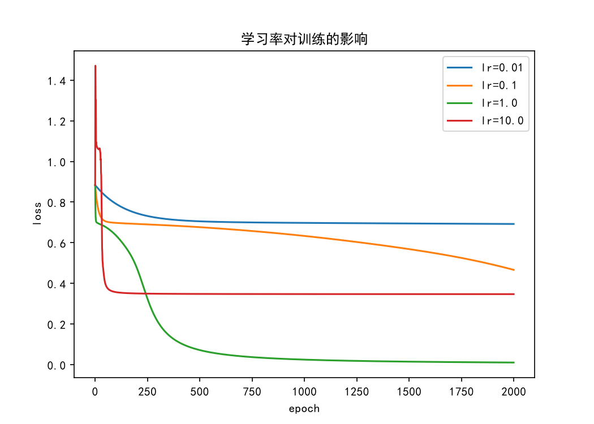

多层感知机（MLP）是在单层线性模型（如 Y = A×颜色 + B×大小 + C）的基础上插入隐藏层，
并在每个神经元后接非线性激活函数（本实验用 sigmoid）的网络。它的训练是一个四步循环：
前向传播算出预测 → 损失函数量化预测与正确答案的差距 →
反向传播用链式法则把误差逐层回推、算出每个参数的梯度 →
梯度下降沿负梯度方向更新参数（W ← W − η×梯度），重复直至损失收敛。
网络结构为 2 → 2 → 1（两个隐藏神经元），参数手动定义并借助 PyTorch 的自动求导机制训练， 以保证对训练循环中每一步的理解都落在公式本身。核心代码两段：
h = torch.sigmoid(X @ W1 + b1) # 隐藏层：2个神经元的输出
p = torch.sigmoid(h @ W2 + b2) # 输出：概率(0~1)
loss = -(y*torch.log(p) + (1-y)*torch.log(1-p)).mean() # 二元交叉熵loss.backward() # 反向传播：自动计算所有参数的梯度
with torch.no_grad():
W1 -= lr * W1.grad # 梯度下降：沿负梯度方向更新
b1 -= lr * b1.grad
W2 -= lr * W2.grad
b2 -= lr * b2.grad
W1.grad.zero_(); b1.grad.zero_() # 梯度清零，防止跨轮累加
W2.grad.zero_(); b2.grad.zero_()
训练结束后模型对四个样本的判定（hidden 列为隐藏层两个神经元的输出）：
| x1 | x2 | 正确答案 | hidden (h1, h2) | 概率 | 预测 |
|---|---|---|---|---|---|
| 0 | 0 | 0 | (0.969, 0.958) | 0.0217 | 0 ✓ |
| 0 | 1 | 1 | (0.034, 1.000) | 0.9722 | 1 ✓ |
| 1 | 0 | 1 | (1.000, 0.043) | 0.9717 | 1 ✓ |
| 1 | 1 | 0 | (0.975, 0.969) | 0.0190 | 0 ✓ |

固定网络结构、数据与随机种子，仅改变学习率 η（0.01 / 0.1 / 1.0 / 10.0）各训练 2000 轮， 用控制变量法观察学习率对训练过程的影响。

各档最终结果对照（实测）：
| 学习率 | 最终损失 | 判对数 | 人格类型 |
|---|---|---|---|
| 0.01 | 0.6922 | 3 / 4 * | 沉睡型：步长不足，未开始学习 |
| 0.1 | 0.4695 | 3 / 4 | 稳健慢跑型：方向正确，轮数不够 |
| 1.0 | 0.0103 | 4 / 4 | 甜点型：速度与稳定的平衡 |
| 10.0 | 0.4688 | 2 / 4 | 暴走被困型：震荡后陷入平坦区 |
结论：学习率的选择是"速度 vs 稳定"的权衡——太小则浪费算力原地不动， 太大则剧烈震荡后陷入坏区域，最优值存在但需实验寻找。现代优化器（如 Adam） 通过为每个参数自适应调节步长来缓解这一问题。
反思：实验前我预测 lr=10 会因步长过大而发散（损失变 nan）， 实测却是"剧烈震荡后被困在 0.47 的平台"——真实系统比预期更微妙。 这提醒我：做实验要记录实际发生了什么，而不是确认自己希望发生的。